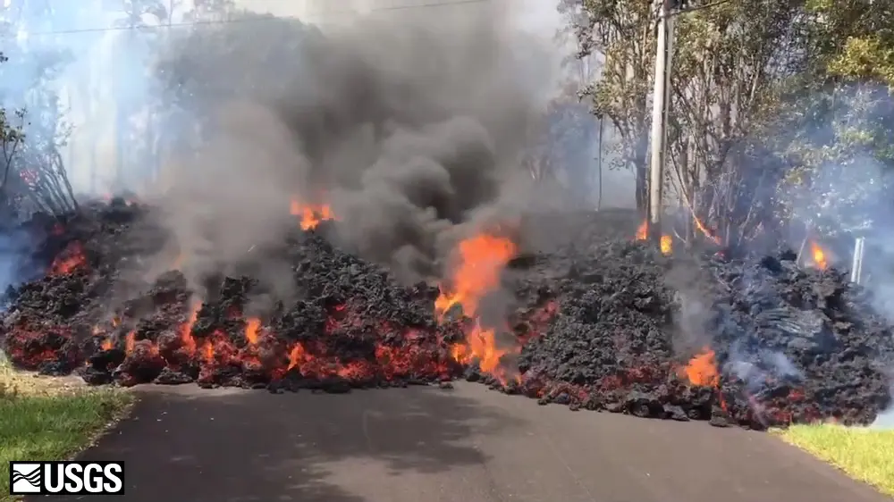

Interactive 3D Viscosimeter
Physics · Lesson 19
Viscosimeter
Drop a sphere into a 50 cm fluid column and measure its fall. Across boiling water, room-temperature water, cold water, motor oil, glycerol, honey, basaltic lava, and silicic magma, dynamic viscosity spans more than six orders of magnitude — powered here by our shared ClassroomOS fluid engines.
Who Was George Gabriel Stokes?
George Gabriel Stokes (1819–1903) was an Irish mathematician and physicist at Cambridge University. In 1851 he derived the drag force on a sphere moving through a viscous fluid — what we now call Stokes' Law. His work is foundational to fluid mechanics, meteorology (how raindrops fall), volcanology (how crystals settle or gas bubbles rise in magma), and particle physics. Robert Millikan later used Stokes' Law in his famous oil-drop experiment to measure the charge of an electron.
Stokes' Law & Terminal Velocity
When a sphere falls through a viscous fluid, three forces act on it: gravity (down), buoyancy (up), and viscous drag (up). At terminal velocity, these forces balance and the sphere moves at a constant speed. If the sphere is less dense than the fluid (ρs ≤ ρf), buoyancy wins and the sphere floats at the meniscus.
Rearranged to find viscosity from a measured terminal velocity:
| Fluid | Temp (°C) | Viscosity η (Pa·s) | Density ρf (kg/m³) | Behavior Notes |
|---|---|---|---|---|
| Boiling Water | 100 | 0.000282 | 958 | Thermal motion weakens H-bonds; lowest viscosity here |
| Water | 20 | 0.0010 | 998 | Reference Newtonian liquid |
| Cold Water | 2 | 0.00167 | 1000 | ~6× more viscous than boiling water; near max density |
| Motor Oil (SAE 30) | 20 | 0.10 | 880 | Long hydrocarbon chains increase internal friction |
| Glycerol | 20 | 1.40 | 1260 | 3 OH-groups per molecule form dense H-bond networks |
| Honey | 20 | 10.0 | 1400 | Concentrated sugar solution resists shear strongly |
| Basaltic Lava | 1150 | 100 | 2700 | Low-silica (~50% SiO2) molten rock; glass floats on it |
| Silicic Magma | 850 | 1000 | 2400 | Silica tetrahedra polymerize into chains that trap gas |
Why Temperature & Silica Content Transform Viscosity
Temperature in Liquids: Heating water from 2°C to 100°C gives molecules extra kinetic energy to break fleeting hydrogen bonds, dropping viscosity from 0.00167 Pa·s to 0.000282 Pa·s. That is why hot syrup pours freely while refrigerated honey barely budges.
Lava vs. Magma: Magma beneath Earth's crust and erupted lava on the surface differ dramatically by temperature and chemistry. Hot, iron-rich basaltic lava (~1150°C) has fewer linked silica (SiO4) chains, so it flows across roads in glowing channels. Cooler, silica-rich magma (~850°C) builds tangled silicate polymer networks that boost viscosity by orders of magnitude, trapping volcanic gases until explosive pressure builds.

Real-World Applications
Practice Problems
Use vt = 2r²(ρs−ρf)g / 9η and Stokes drag:
Easy1. Terminal velocity is reached when the drag force plus buoyancy equals the gravitational force. True or False?
Easy2. Among everyday lab liquids, which fluid has the highest viscosity?
Medium3. Stokes' Law: F = 6πηrv. A sphere of r = 0.002 m falls at v = 0.01 m/s in glycerol (η = 1.4 Pa·s). What is the drag force? (Answer in scientific notation ×10⁻⁴ N, 2 sig figs.)
Medium4. Suppose a sphere falls in a fluid 100× more viscous than glycerol (with similar density difference). Compared to glycerol, its terminal velocity would be approximately:
Challenge5. A steel sphere (r = 1 mm = 0.001 m, ρs = 7800 kg/m³) falls in glycerol (η = 1.4 Pa·s, ρf = 1260 kg/m³). g = 9.8 m/s². Calculate terminal velocity in m/s (3 sig figs).
Medium6. Test Glass (ρs = 2500 kg/m³) in Basaltic Lava (ρf = 2700 kg/m³) in the 3D simulator. What happens to the glass sphere?